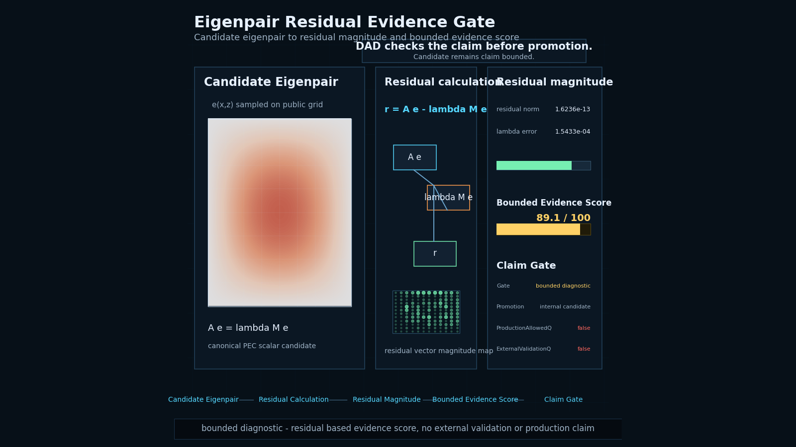
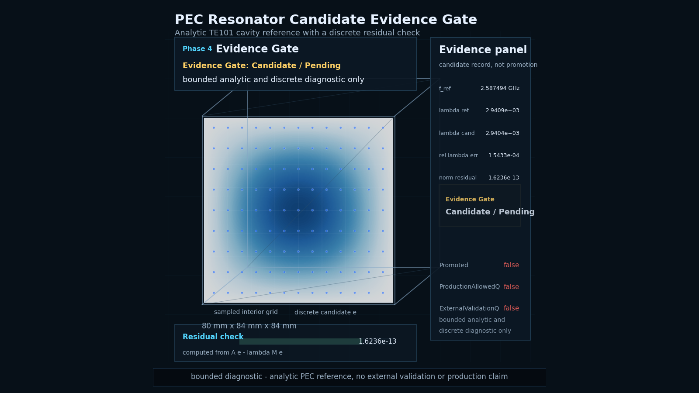
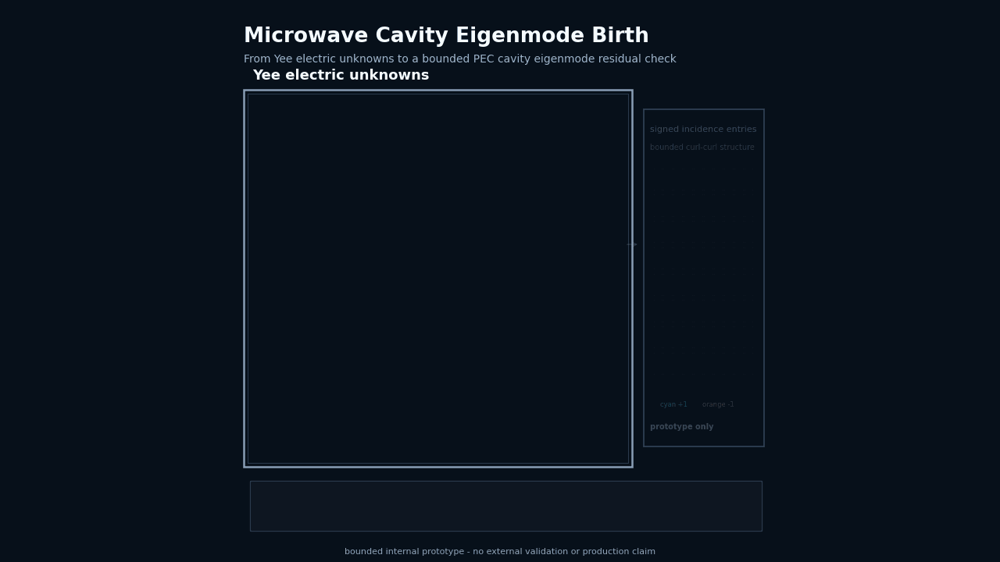
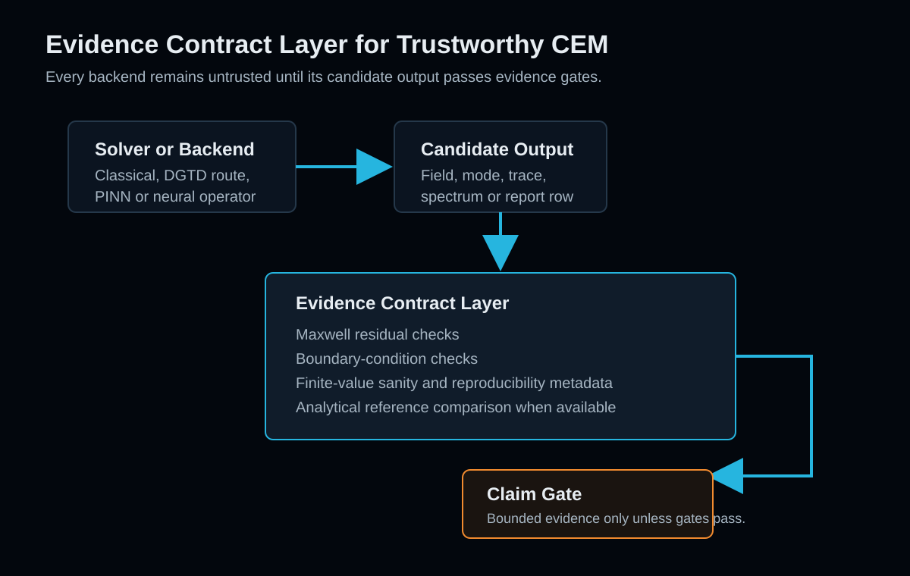

Residuals
Candidate fields and modes need residual records before they can support stronger interpretations.
Evidence Contract Framework
Trustworthy CEM starts after the field plot.

DAD FieldWorks adds evidence contracts to classical solvers, resonator workflows and future physics-AI backends, so numerical results carry residuals, limits and claim boundaries before they are trusted.
The current public-safe milestone is a bounded internal PEC cavity eigenmode prototype path with residual and analytical reference comparison. It is presented as an Alpha evidence path, not as a production solver.
Private research and development project. Public showcase and whitepaper material only.
Why this matters
CEM results can be visually convincing while failing residual, boundary-condition, energy, divergence, reference or reproducibility checks. DAD FieldWorks is being shaped around evidence records that say what was checked, what failed, what remains bounded and what the result is allowed to claim.
Candidate fields and modes need residual records before they can support stronger interpretations.
Boundary-condition and finite-value checks prevent plausible pictures from outrunning the evidence.
Analytical comparison rows keep reference scope separate from visual diagnostics.
Production and validation gates remain closed unless the evidence record supports opening them.
Featured diagnostics
The public visuals are diagnostic communication assets. They show field behavior, resonator ringdown, PEC cavity modes and operator-near evidence concepts.

Candidate eigenpair to residual magnitude and bounded evidence score.
This deterministic visualization shows how a solver candidate is treated as a claim, not as truth. DAD FieldWorks computes a residual, derives a bounded evidence score and keeps the result inside an explicit claim boundary unless stronger evidence exists.

Analytic TE101 cavity reference with a discrete residual check.
This deterministic visualization shows an ideal rectangular PEC cavity reference field and a discrete candidate residual check. The field remains a bounded candidate until residual, reference and claim boundary gates support a stronger statement.

Time-domain build-up, ringdown and spectrum derived from the probe signal.

Standing scalar eigenmode field-slice diagnostic for a bounded reference path.

From Yee electric unknowns to a bounded PEC cavity eigenmode residual check.
This deterministic visualization shows a bounded internal path from Yee electric unknowns through oriented curl incidence and prototype operator structure toward a PEC cavity eigenmode slice with residual and analytical reference status.

Oriented Yee E unknowns and signed curl incidence rows as a bounded microprototype.
Evidence Contract Roadmap
A future PINN or neural-operator backend is treated as an AI-assisted solver quarantine: neural outputs remain untrusted until residual, boundary, divergence, energy, reference and reproducibility checks support a bounded claim.
Read the platform roadmap
Backend gates
| Layer | Direction | Evidence Gate |
|---|---|---|
| Classical solver path | PEC cavity, curl-curl route, residual and reference comparison | Residual, boundary, finite-value and analytical reference checks |
| C++ product layer | Resonator Lab Alpha, CLI skeleton, artifact replay | Contract and replay checks |
| Future DGTD backend | Discontinuous Galerkin time-domain route | DG residual, flux, boundary and conservation checks |
| Future physics-AI backend | PINN or neural-operator route | Maxwell residual, boundary, divergence, energy and reference gates |
Central claim boundary
DAD FieldWorks public materials show architecture notes, whitepaper material and diagnostic visualizations from a private research and development project.